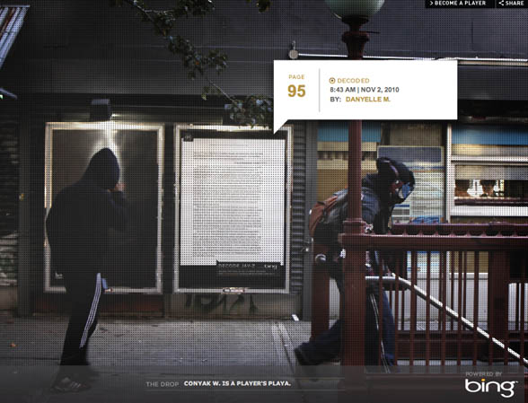
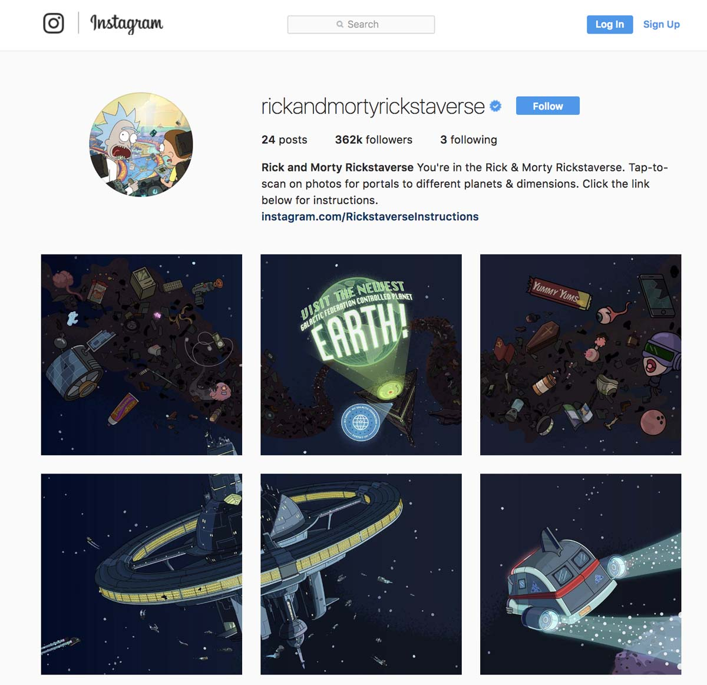

The Inspiration
This campaign was inspired by several alternate reality games using social media and digital spaces as it's omnichannel output. Jay-Z Decoded uses space and shows parts of the unreleased book so as a progression to the final launch. Rick and Morty uses instagram as a game to discover new worlds. Nine Inch Nails "Year Zero" campaign displays hidden clues at certain venues while releasing parts of music videos creating an alternate reality for fans to participate.

